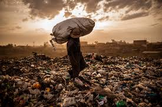

causes insecurity because its a hidding spot for criminals
the dupm around water catchment causes waterborne diseases to the people around
lots of people lack jobs and becase there is a dumpsite theydont bother to seek for one they just use it as a home and source of food
the gvt should come up with trash cans allover and a rule that anyone caught littering careless should be fined
website projects should be made bigger to create awareness to those who lack jobs and work at the dumping sites
the govt can ban materials which cannot decompose and encourage use of biodegraddable materials.